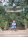
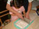
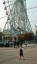

2004年2月29日 15時02分撮影
とっても楽しそうに踊っていたね。ママは目頭が熱くなりました（涙）。2004年2月29日 8時48分撮影
普段は全く着ない制服。今日は春まつりなので制服を着ました。2004年1月28日 14時34分撮影
ぐーチョコランタンがやって来たー！！
2004年1月10日 11時02分撮影
我が家の氏神さん「等爾神社」へ初詣2004年1月1日 21時46分撮影
ミニクラブでサーカスショーに出演。ターザン役です。可愛かったね！2003年12月31日 10時36分撮影
プールで仲良しになった「リコちゃん（６歳）」と。。。2003年12月30日 18時47分撮影
冬休みを利用して「CLUBMED／PHUKET」へ。
夕食はチャイナドレスでちょっとオメカシ。。。（なのに食事中に熟睡）2003年11月29日 14時39分撮影
由起子初めて「USＪ」へ。園内はクリスマスのディスプレイ一色。
暗い所が苦手な由起子はアトラクションで（４回も）涙を流しました。
2003年11月24日 14時53分撮影
享平くんちで「そばづくり」初体験。これは蕎麦を細く切っているところ。
2003年11月8日 15時14分撮影
海遊館近くにある巨大観覧車。何でも大きさが世界一だとか・・・。